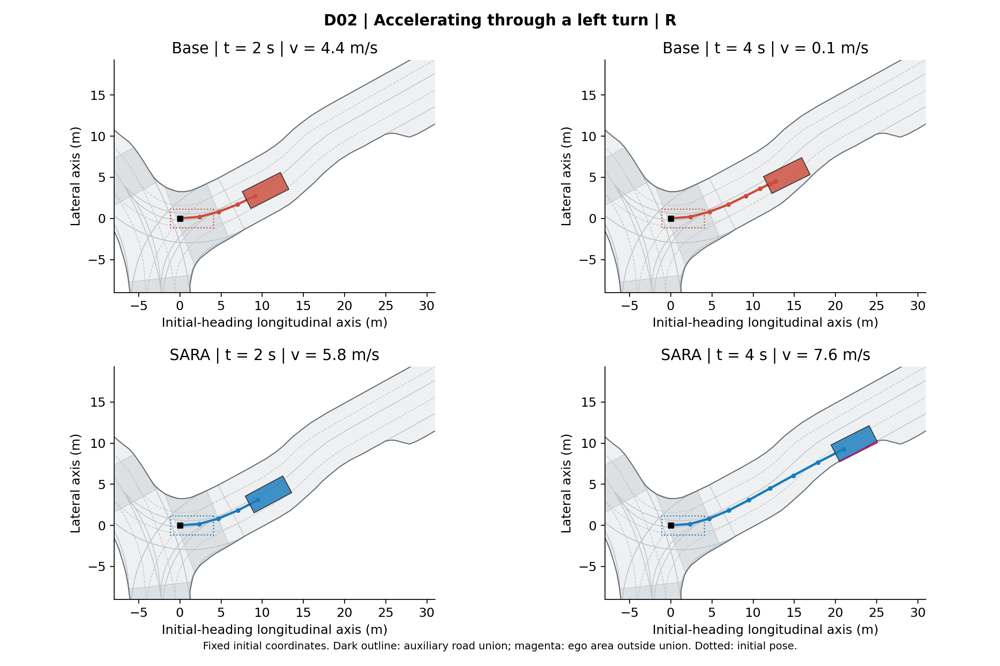
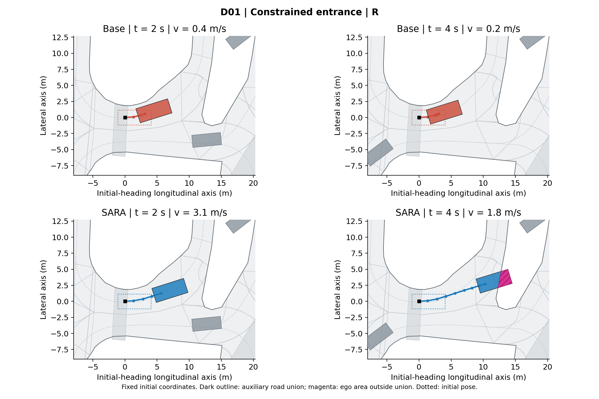
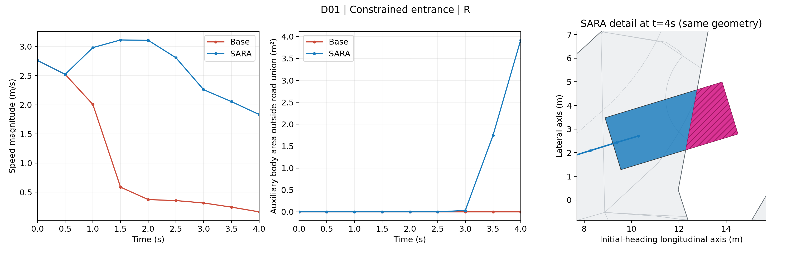
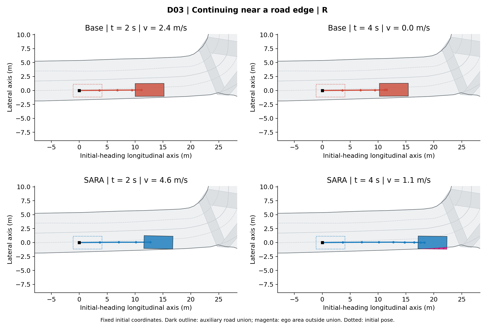
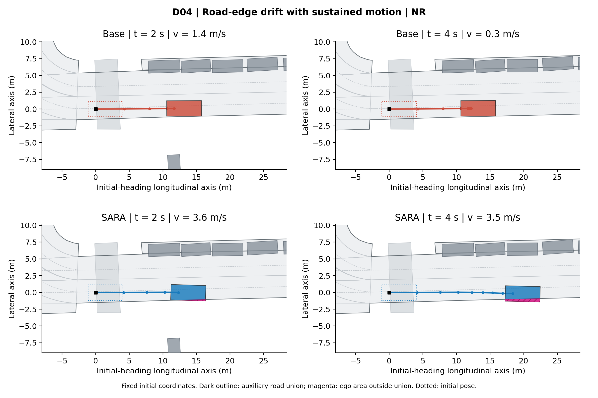
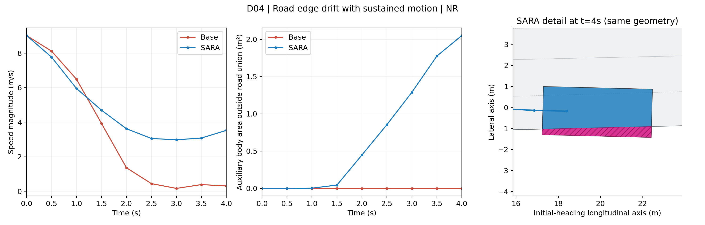
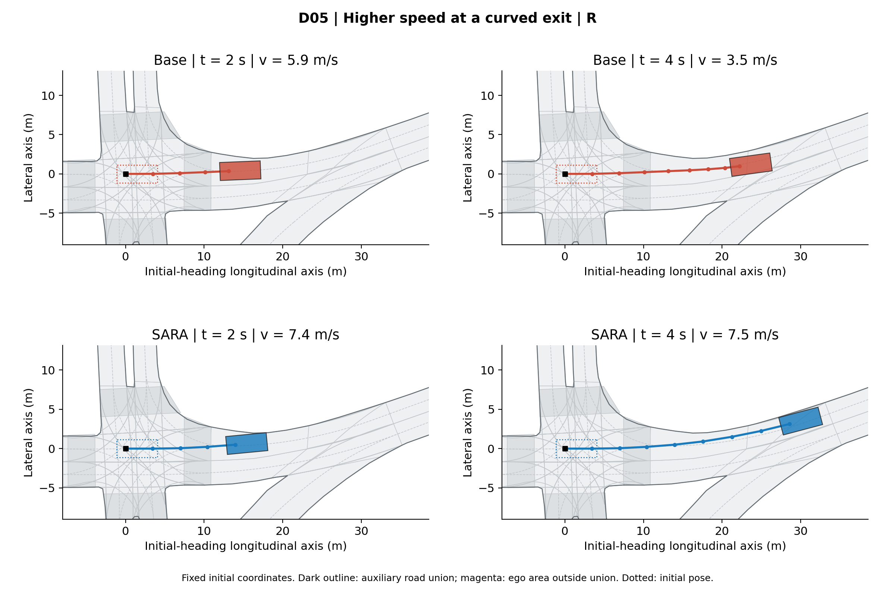
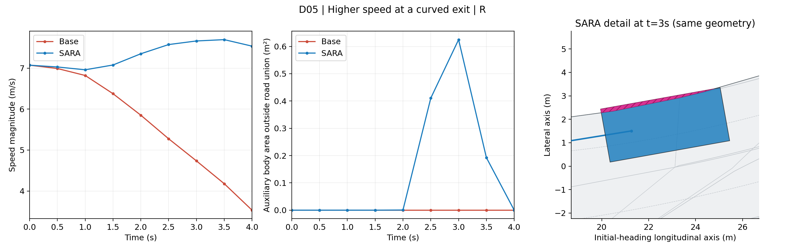
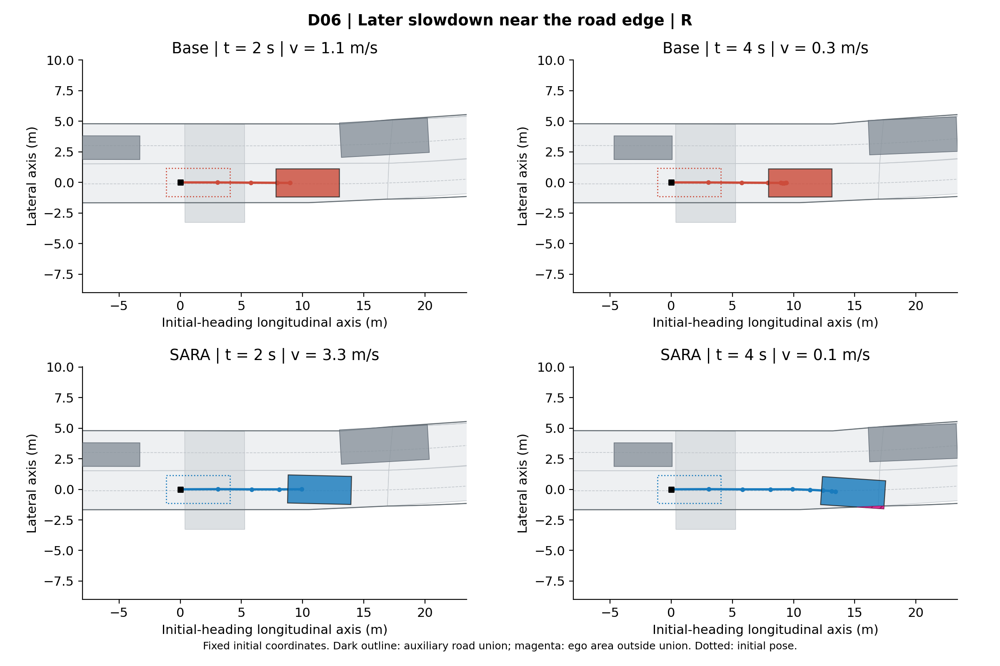
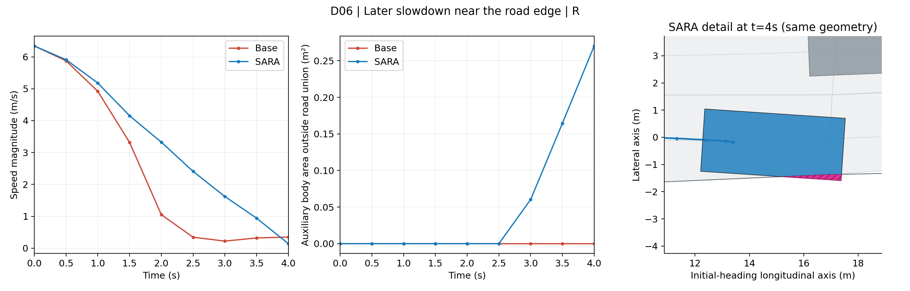

D02 · 左转后继续加速，压出道路边缘（R）
Base 后半段减速，SARA 持续加速；道路越界约 0.20 m，局部细节较小。 四秒行程 Base 13.7 m → SARA 23.2 m；2 秒速度 4.4 → 5.8 m/s；4 秒速度 0.1 → 7.6 m/s。辅助几何首次检出越界约 3.5 s，最大角点超出约 0.20 m。


优先 D02、D04，D01 为原 F05 参照。每例均为 Base DAC=1、SARA DAC=0；深色是辅助地图并集边界，洋红色是车身超出部分。大部分新例是轻微贴边，不是整车冲出道路。
原 F05，保留参照；越界最明显。 四秒行程 Base 3.8 m → SARA 10.7 m；2 秒速度 0.4 → 3.1 m/s；4 秒速度 0.2 → 1.8 m/s。辅助几何首次检出越界约 3 s，最大角点超出约 2.05 m。


Base 后半段减速，SARA 持续加速；道路越界约 0.20 m，局部细节较小。 四秒行程 Base 13.7 m → SARA 23.2 m；2 秒速度 4.4 → 5.8 m/s；4 秒速度 0.1 → 7.6 m/s。辅助几何首次检出越界约 3.5 s，最大角点超出约 0.20 m。

Base 停在前方，SARA 继续推进；采样最大角点越界约 0.34 m。 四秒行程 Base 11.8 m → SARA 18.3 m；2 秒速度 2.4 → 4.6 m/s；4 秒速度 0.0 → 1.1 m/s。辅助几何首次检出越界约 2 s，最大角点超出约 0.34 m。


此例仅 NR 满足 DAC 1→0；R 两边均 DAC=0。不能跨模式混用。 四秒行程 Base 12.6 m → SARA 18.4 m；2 秒速度 1.4 → 3.6 m/s；4 秒速度 0.3 → 3.5 m/s。辅助几何首次检出越界约 1 s，最大角点超出约 0.52 m。


越界主要发生在 2.5–3.5 秒，4 秒已减轻；附 3 秒关键时刻。 四秒行程 Base 22.2 m → SARA 28.9 m；2 秒速度 5.9 → 7.4 m/s；4 秒速度 3.5 → 7.5 m/s。辅助几何首次检出越界约 2 s，最大角点超出约 0.16 m。


简单路段，转向差异细；展示减速时机与边缘余量的备选。 四秒行程 Base 9.7 m → SARA 13.4 m；2 秒速度 1.1 → 3.3 m/s；4 秒速度 0.3 → 0.1 m/s。辅助几何首次检出越界约 3 s，最大角点超出约 0.23 m。

